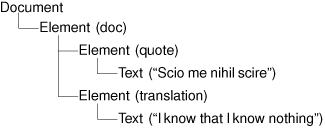

DOM is a standard API for parsing XML developed by the W3C. Qt provides a non-validating DOM Level 2 implementation for reading, manipulating, and writing XML documents.
DOM represents an XML file as a tree in memory. We can navigate through the DOM tree as much as we want, and we can modify the tree and save it back to disk as an XML file.
Let's consider the following XML document:
<doc>
<quote>Scio me nihil scire</quote>
<translation>I know that I know nothing</translation>
</doc>It corresponds to the following DOM tree:

The DOM tree contains nodes of different types. For example, an Element node corresponds to an opening tag and its matching closing tag. The material that falls between the tags appears as child nodes of the Element node. In Qt, the node types (like all other DOM-related classes) have a QDom prefix; thus, QDomElement represents an Element node, and QDomText represents a Text node.
Different types of nodes can have different kinds of child nodes. For example, an Element node can contain other Element nodes, as well as EntityReference, Text, CDATASection, ProcessingInstruction, and Comment nodes. Figure 16.3 shows which nodes can have which kinds of child nodes. The nodes shown in gray cannot have any child nodes of their own.
To illustrate how to use DOM for reading XML files, we will write a parser for the book index file format described in the preceding section (p. 389).
class DomParser
{
public:
DomParser(QTreeWidget *tree);
bool readFile(const QString &fileName);
private:
void parseBookindexElement(const QDomElement &element);
void parseEntryElement(const QDomElement &element,
QTreeWidgetItem *parent);
void parsePageElement(const QDomElement &element,
QTreeWidgetItem *parent);
QTreeWidget *treeWidget;
};We define a class called DomParser that will parse a book index XML file and display the result in a QTreeWidget.
DomParser::DomParser(QTreeWidget *tree)
{
treeWidget = tree;
}In the constructor, we simply assign the given tree widget to the member variable. All the parsing is done inside the readFile() function.
bool DomParser::readFile(const QString &fileName)
{
QFile file(fileName);
if (!file.open(QFile::ReadOnly | QFile::Text)) {
std::cerr << "Error: Cannot read file " << qPrintable(fileName)
<< ": " << qPrintable(file.errorString())
<< std::endl;
return false;
}
QString errorStr;
int errorLine;
int errorColumn;
QDomDocument doc;
if (!doc.setContent(&file, false, &errorStr, &errorLine,
&errorColumn)) {
std::cerr << "Error: Parse error at line " << errorLine << ", "
<< "column " << errorColumn << ": "
<< qPrintable(errorStr) << std::endl;
return false;
}
QDomElement root = doc.documentElement();
if (root.tagName() != "bookindex") {
std::cerr << "Error: Not a bookindex file" << std::endl;
return false;
}
parseBookindexElement(root);
return true;
}
In readFile(), we begin by trying to open the file whose name was passed in. If an error occurs, we output an error message and return false to signify failure. Otherwise, we set up some variables to hold parse error information, should they be needed, and then create a QDomDocument. When we call setContent() on the DOM document, the entire XML document provided by the QIODevice is read and parsed. The setContent() function automatically opens the device if it isn't already open. The false argument to setContent() disables namespace processing; refer to the QtXml reference documentation for an introduction to XML namespaces and how to handle them in Qt.
If an error occurs, we output an error message and return false to indicate failure. If the parse is successful, we call documentElement() on the QDomDocument to obtain its single QDomElement child, and we check that it is a <bookindex> element. If we have a <bookindex>, we call parseBookindexElement() to parse it. As in the preceding section, the parsing is done using recursive descent.
void DomParser::parseBookindexElement(const QDomElement &element)
{
QDomNode child = element.firstChild();
while (!child.isNull()) {
if (child.toElement().tagName() == "entry")
parseEntryElement(child.toElement(),
treeWidget->invisibleRootItem());
child = child.nextSibling();
}
}In parseBookindexElement(), we iterate over all the child nodes. We expect each node to be an <entry> element, and for each one that is, we call parseEntry() to parse it. We ignore unknown nodes, to allow for the book index format to be extended in the future without preventing old parsers from working. All <entry> nodes that are direct children of the <bookindex> node are top-level nodes in the tree widget we are populating to reflect the DOM tree, so when we want to parse each one we pass both the node element and the tree's invisible root item to be the widget tree item's parent.
The QDomNode class can store any type of node. If we want to process a node further, we must first convert it to the right data type. In this example, we only care about Element nodes, so we call toElement() on the QDomNode to convert it to a QDomElement and then call tagName() to retrieve the element's tag name. If the node is not of type Element, the toElement() function returns a null QDomElement object, with an empty tag name.
void DomParser::parseEntryElement(const QDomElement &element,
QTreeWidgetItem *parent)
{
QTreeWidgetItem *item = new QTreeWidgetItem(parent);
item->setText(0, element.attribute("term"));
QDomNode child = element.firstChild();
while (!child.isNull()) {
if (child.toElement().tagName() == "entry") {
parseEntryElement(child.toElement(), item);
} else if (child.toElement().tagName() == "page") {
parsePageElement(child.toElement(), item);
}
child = child.nextSibling();
}
}In parseEntryElement(), we create a tree widget item. The parent item that is passed in is either the tree's invisible root item (if this is a top-level entry) or another entry (if this is a sub-entry). We call setText() to set the text shown in the item's first column to the value of the <entry> tag's term attribute.
Once we have initialized the QTreeWidgetItem, we iterate over the child nodes of the QDomElement node corresponding to the current <entry> tag. For each child element that is an <entry> tag, we call parseEntryElement() recursively with the current item as the second argument. Each child's QTreeWidgetItem will then be created with the current entry as its parent. If the child element is a <page>, we call parsePageElement().
void DomParser::parsePageElement(const QDomElement &element,
QTreeWidgetItem *parent)
{
QString page = element.text();
QString allPages = parent->text(1);
if (!allPages.isEmpty())
allPages += ", ";
allPages += page;
parent->setText(1, allPages);
}In parsePageElement(), we call text() on the element to obtain the text that occurs between the <page> and </page> tags; then we add the text to the comma-separated list of page numbers in the QTreeWidgetItem's second column. The QDomElement::text() function navigates through the element's child nodes and concatenates all the text stored in Text and CDATA nodes.
Let's now see how we can use the DomParser class to parse a file:
int main(int argc, char *argv[])
{
QApplication app(argc, argv);
QStringList args = QApplication::arguments();
...
QTreeWidget treeWidget;
...
DomParser parser(&treeWidget);
for (int i = 1; i < args.count(); ++i)
parser.readFile(args[i]);
return app.exec();
}We start by setting up a QTreeWidget. Then we create a DomParser. For each file listed on the command line, we call DomParser::readFile() to open and parse each file and populate the tree widget.
Like the previous example, we need the following line in the application's .pro file to link against the QtXml library:
QT += xml
As the example illustrates, navigating through a DOM tree is straightforward, although not quite as convenient as using QXmlStreamReader. Programmers who use DOM a lot often write their own higher-level wrapper functions to simplify commonly needed operations.